No todo sobre los hipopótamos
Ensayo y publicación comisionada para el 46 SNA
Diseño y diagramación
Jerónimo Velásquez
2022
Enlaces y descargas
Afiche No todo sobre los hipopótamos
La existencia de hipopótamos en el río Magdalena supone una situación extraordinaria. La historia de su llegada al zoológico privado de Pablo Escobar en el auge de su riqueza y su posterior paso al río Magdalena hacen parte de un complejo
entramado que inserta a estos animales de origen africano en el contexto del Magdalena medio. Los hipopótamos tienen un impacto considerable sobre los ecosistemas del río así como en los imaginarios del Magdalena y la manera en que se narra
al cuerpo de agua que los hospeda. Este ensayo plantea una serie de reflexiones a partir de obras y prácticas que han abordado a los hipopótamos a lo largo de la historia. Un aporte, desde la representación artística, a los debates tórridos
en torno a los hipopótamos del río Magdalena.
NO TODO SOBRE LOS HIPOPÓTAMOS
por Juan Mejía
…los animales grandes son como los problemas grandes.
–Hannah Tinti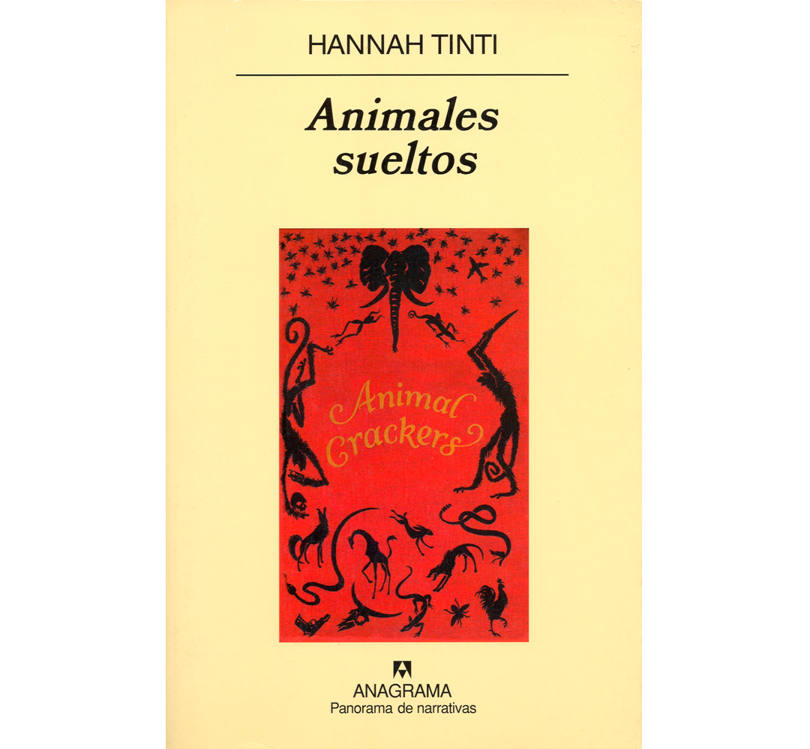
Los hipopótamos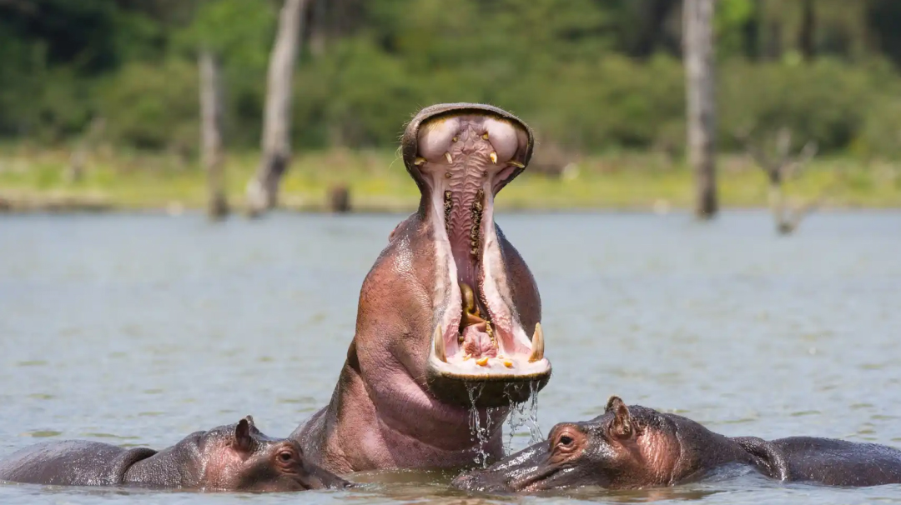 son criaturas ambiguas: de tierra y de agua, tiernos y feroces, pesados
y rápidos, herbívoros y peligrosos, mamíferos y anfibios. Tienen el cuerpo muy grande, pero las patas, los ojos y las orejas pequeñitas. Son activos de noche y perezosos de día. Permanecen en grupos pero no son sociales. Y son muy
territoriales, pero en el agua…
Hipopótamo quiere decir caballo de río, así lo llamaron los griegos. No confundir con el caballo de mar, el hipocampo. Ninguno de los dos
es caballo, en realidad, aunque ambos tienen esa cabeza alargada y ese hocico estirado y recto propio de los equinos. Pero mientras el de mar, que es en realidad un pez, tiene ese perfil tan refinado, el de río es rechoncho y gracioso. Los
egipcios lo llamaban más bien cerdo de río, no caballo. Los árabes, búfalo de agua. Hippopotamus amphibius lo llaman los taxonomistas.
NOMBRAR es un acto creativo que implica relación, experiencia, sensibilidad, talento; no solo por cuanto toca inventarse el nombre de aquello sobre lo cual se pretende establecer jurisdicción, sino porque con ello se da existencia a aquello
nombrado. Lo que aún no ha sido nombrado, no existe. Los naturalistas lo saben bien.
Adán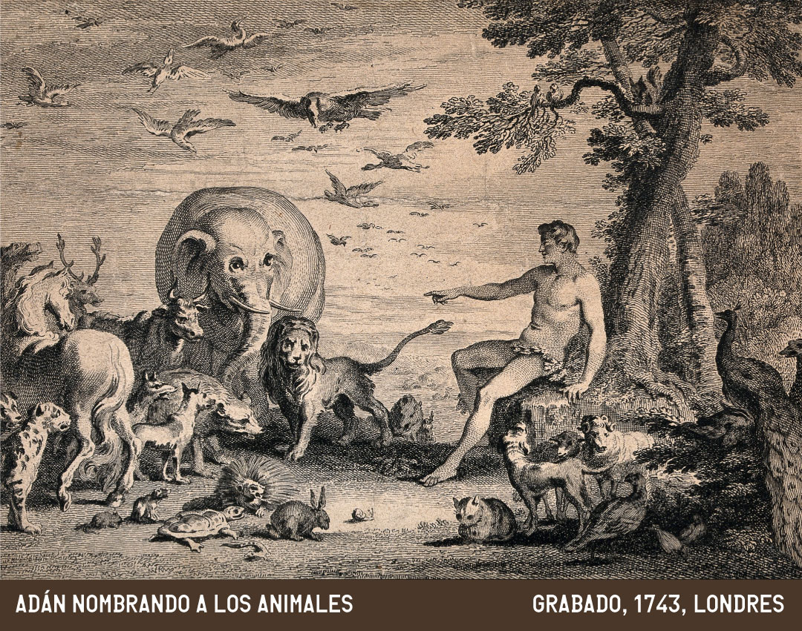, primer artista nombrando
a todos los animales… ¿Se lo imaginan?: “… esta se podría llamar foca, a este pongámosle cinzonte, a este mmm… cucarrón, a esta, pongámosle jirafa, este tiene cara de monstruo de Gila… ¡Uf!, este tiene que
llamarse arqueoptérix…
Hipo, el prefijo, también quiere decir debajo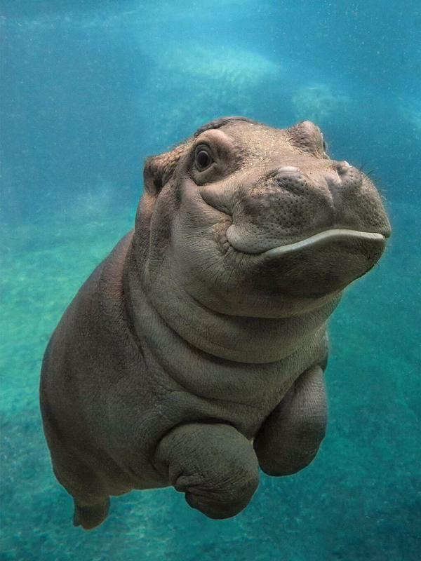. Le conviene también esta raíz al
hipopótamo. Como en “debajo del río”, donde se la pasa buena parte del tiempo. Pero no, esta raíz tiene otro origen.
El hipopótamo es de reino animal, de filo chordata, de subfilo vertebrata, de clase mamífero, de orden artiodáctilo y de suborden whippomorpha. Son ungulados, paquidermos y, aunque tienen estómagos
complejos de tres cámaras, no son propiamente rumiantes. Artiodáctilo se refiere a que tiene número par de dedos, a diferencia del rinoceronte, por ejemplo, que tiene número impar y se cuenta entre los perisodáctilos.
Clasificar especies según número de dedos es una actividad milenaria. Y CLASIFICAR, en general, otro arte primordial.
Estos mamíferos comparten ancestro común con los cetáceos, sus parientes vivos más cercanos. ¡Ah, las ballenas!.. Románticas criaturas que evolutivamente retornaron al mar luego de husmear un tiempo las tierras. ¿Serán los hipopótamos
criaturas que quieren volver a ser acuáticas o que no han salido del todo del agua?
Los hipopótamos adultos, contrario a las apariencias y las creencias generales, y al contrario también de sus crías, no flotan ni nadan. Cierran las narinas para sumergirse durante hasta 5 minutos por vez... y se propulsan, si quieren,
mediante pequeños saltos desde el fondo. No flotan ni nada.
Mantener ostensiblemente la boca abierta durante largos ratos al amanecer y al anochecer, así como estar sumergiéndose en el agua y reapareciendo regularmente, les otorgó simbólicamente una asociación con ciclos de vida y muerte, regeneración
y renacer en el Antiguo Egipto. De esto dan cuenta múltiples
amuletos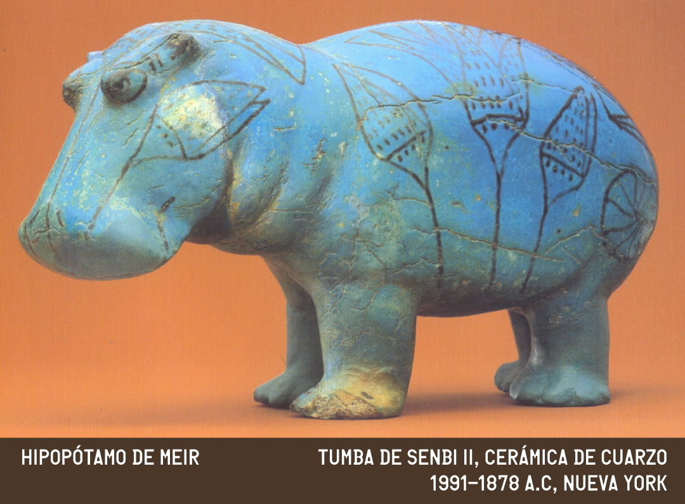 con formita de hipopótamo encontrados en las famosas tumbas de los egipcios.
Algunas de estas figuras tienen pintadas en su cuerpo lotos y plantas acuáticas cerradas y abiertas que refuerzan esta asociación.
Las estatuillas podrían también cumplir la función de mantener a raya a estos feroces mamíferos mediante lo que los antropólogos llaman “magia simpática”, el dominio que se adquiere sobre ciertos fenómenos naturales y animales a través de
su imagen o su representación.
Tueris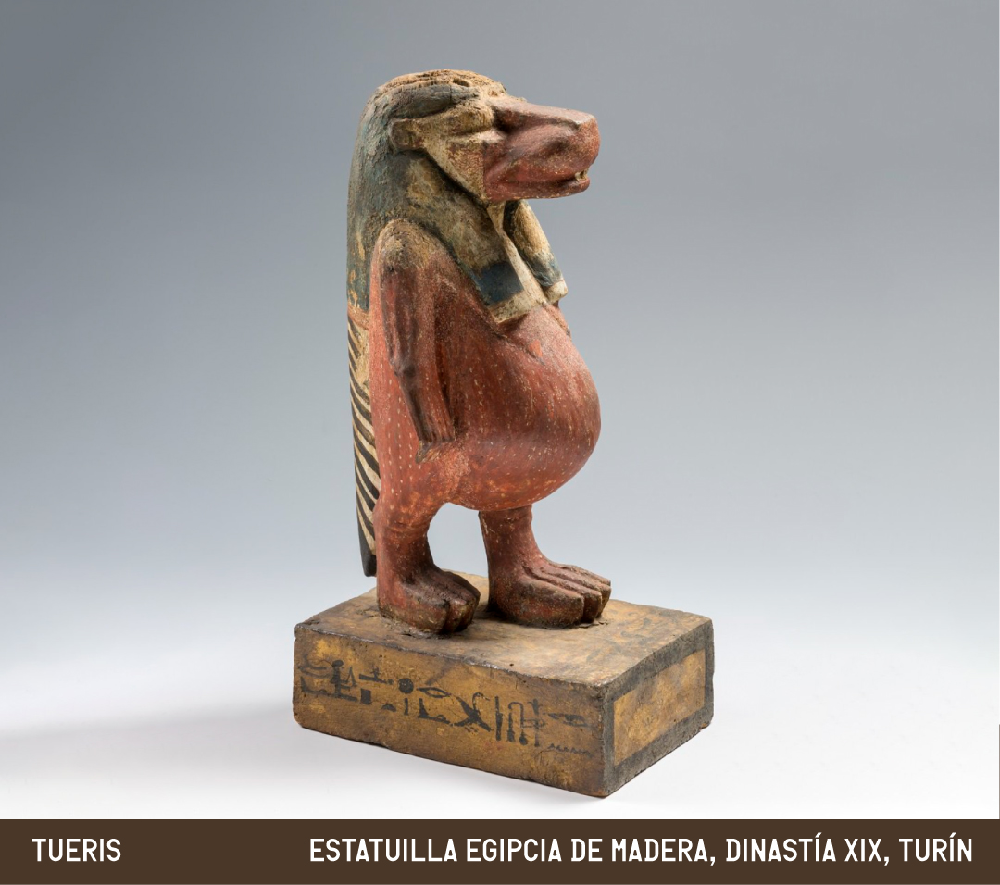 (La grande), o Tauret, era diosa hipopótama de la fertilidad y protectora
de las mujeres embarazadas. Amuletos con su imagen eran portados por ellas para favorecer la abundancia de leche materna. Al parecer, los antiguos egipcios reconocían la forma temeraria como las madres hipopótamas protegen a sus
hipopotamitos, incluso de sus propios padres, en ocasiones. Reconocían en su imaginación también, y lo representaban en figuras teriomórficas, el cuerpo de embarazada que adquiriría un hipopótamo si se irguiera en dos patas. Tueris, hija de
Ra, ayudó a Horus en la lucha contra su tío Seth, de quien dijo Plutarco era su concubina. Tenía igualmente, Tueris, cola de cocodrilo… ¿O de cocodrila?
Por otra parte, Plutarco propaga mala fama a los hipos en De Isis y Osiris (s. II). Dice que son imagen de violencia insolente, ya que según decires, este animal mata a su padre y luego tiene unión con su madre. Algo de lo cual repite
Claudio Eliano: “El hipopótamo es la cosa más impía, pues gusta de comer a su mismo padre”. Robert Graves lo recuerda con humor en Los mitos griegos (1955), y señala que Freud nunca habría sugerido que todos los hombres tienen un complejo
de hipopótamo. (¡Ni Plutarco que los hipopótamos padecieran complejo de Edipo!...)
https://elpais.com/diario/hipo-pótamo
Aparte de esto, los hipopótamos no significan nada. Los perros significan fidelidad (o infidelidad, depende de la óptica), los gatos negros son mala suerte, los elefantes tienen buena memoria, la paloma es símbolo de paz, el león y el
águila representan poder y soberanía sobre la tierra y el cielo respectivamente, la zorra es astuta y solapada y la abeja simboliza la laboriosidad y la transformación de la materia, la producción de mieles doradas alegóricas del sol y de
arquitecturas geométricamente perfectas e infinitas, y su organización en sociedades es fácilmente asimilable a regímenes comunistas o fascistas o monárquicos o monásticos. Pero el hipopótamo, como tal, no significa nada. Solo es grande y
redondo.
Sobre el POPÓ de los hipopótamos: El POPÓ de los hipopótamos es muy importante y muy interesante. Se estima que un hipopótamo ingiere 40 kilos de hierba al día, luego hace mucho POPÓ. En realidad,
ellos pastan generalmente de noche accediendo a las praderas a través de caminitos que hacen y usan rutinariamente. El día lo pasan mayoritariamente en el río. Y su alternancia de estancia entre la tierra y el agua representa un puente para
pasar nutrientes de un espacio a otro. Es así que el POPÓ de los hipopótamos cumple un rol destacado en el flujo de las redes tróficas de los ecosistemas, es decir, es clave para la supervivencia de otras especies, proporcionándoles
nutrientes deliciosos como el silicio, y las moléculas de siempre (el carbono, el nitrógeno y el fósforo) en grandes cantidades. El silicio, particularmente, es valioso para las llamadas diatomeas, microorganismos fundamentales para la
fijación de dióxido de carbono, quienes lo requieren para formar su pared celular orgánica. Con una eficiencia extraordinaria para su tamañito, llevan a cabo el 20 % de toda la actividad primaria en el planeta, y su disminución puede causar
desarrollo y crecimiento de algas consumidoras de oxígeno e impactar en la supervivencia de otras especies de animales. El POPÓ de los hipopótamos, entonces, mediante este proceso enriquece el agua; no como el nuestro, que se va también
todo por el mismo río volviéndolo mierda.
La información anterior es discutible y controversial. Es decir, es el caso en el Nilo y los ecosistemas africanos, donde la especie es parte integral de ellos, y donde no impacta sorpresivamente a otras especies. En realidad, es posible
que aquí en el Magdalena vaya causando estragos mientras se estabiliza el número de hipopótamos y su POPÓ. Mientras tanto es una de las mayores causas de alerta ambiental.
www.ngenespanol.com/colombia-busca-sacrificar-a-los-hipopotamos
Lo que sí resulta incontrovertible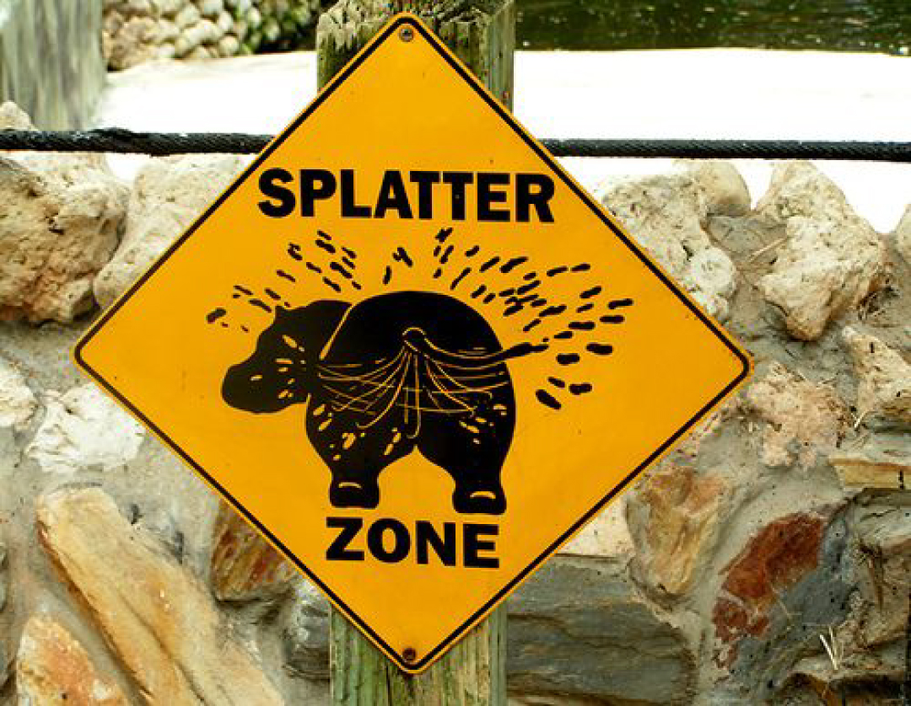 es que los hipopótamos giran la cola como una hélice
(de avioneta) para esparcir el POPÓ por doquier. Y que otras fuentes relatan que el POPÓ de los hipopótamos lo usaron los narcotraficantes para distraer a los perros detectores de cocaína, pero no se sabe bien cómo.
La famosa parábola india de los ciegos y el elefante funciona porque el elefante tiene partes muy distintas y distinguibles, tanto a la vista como al tacto. Dice que un grupo de ciegos (des)conoce al elefante mediante el tacto y que cada
uno lo describe de manera muy diferente según la parte que experimentó. Uno cogió la trompa y describió al elefante como blandito y largo, otro la pata y dijo que era como el tronco de un árbol, otro tocó la oreja y le pareció que era como
un abanico, otro tocó el colmillo y dijo que el animal era liso y duro, a otro le tocó la cola y aseguró que el elefante era como un pincel…
La parábola habla de relatividad, de la opacidad o de la inexpresabilidad de la verdad absoluta. Pero con el hipopótamo no funcionaría, ya que el hipopótamo es prácticamente un solo continuo de redondez y lisura. Si algo, es como una
berenjena con patas. Y ya.
Solo habitan libremente en algunos países del África subsahariana, donde configuran un nuevo país, “el país de los hipopótamos” y en la cuenca del Río Magdalena, “el otro país de los hipopótamos”… En el África su población está disminuyendo
drásticamente por los cambios ambientales y la caza furtiva, es una especie vulnerable a la extinción. Los cazan por su carne, por su piel y por el marfil de sus colmillos. Es un problema. En Colombia, en cambio, su población está
aumentando en forma exponencial. Es otro problema.
En 1981, como es bien sabido, el congresista y narcotraficante Pablo Escobar importó cuatro hipopótamos, un macho llamado Pepe y tres hembras. Eran miembros ilustres de su colección privada de especímenes exóticos alojada en la Hacienda Nápoles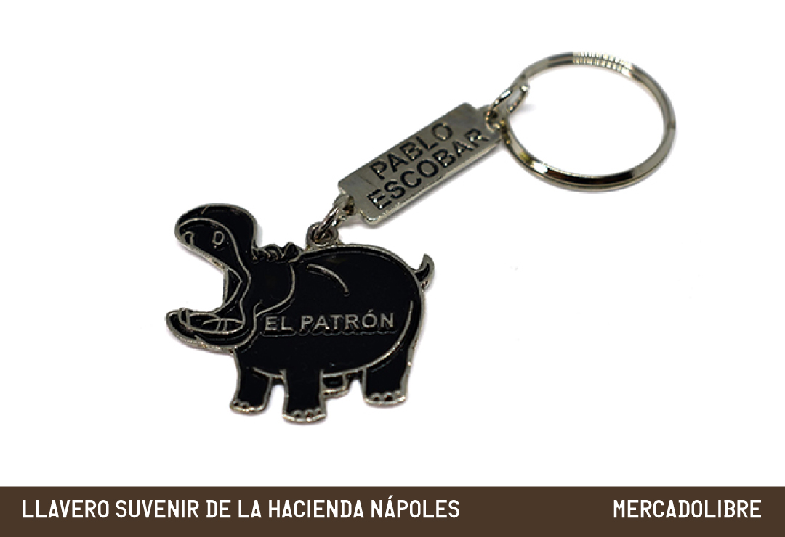 de su propiedad, en Doradal, Antioquia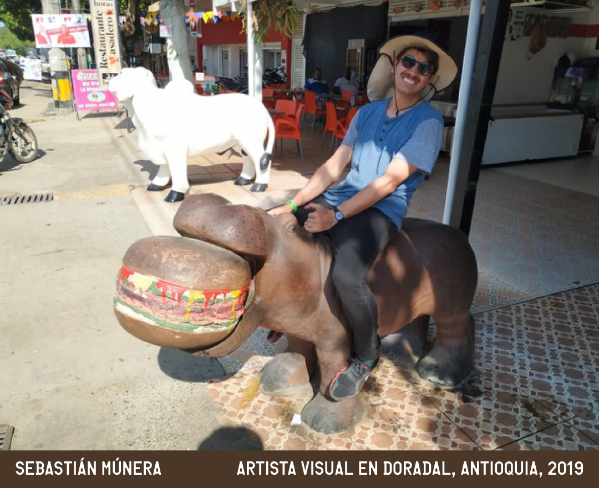
. Su ménagerie. Era costumbre desde la Antigüedad que las cortes tuvieran un pequeño zoológico privado que diera cuenta de sus conquistas, de su poder, de su estatus y de su sensibilidad por lo exótico.
elcomercio.pe/mundo/latino-america/hipopotamo-pablo-escobar-pepe-calles
Tras la muerte de Escobar algunos de sus animales fueron relocalizados en otros zoológicos y otros murieron. Pero los hipopótamos, abandonados, salieron de los predios y fueron colonizando terrenos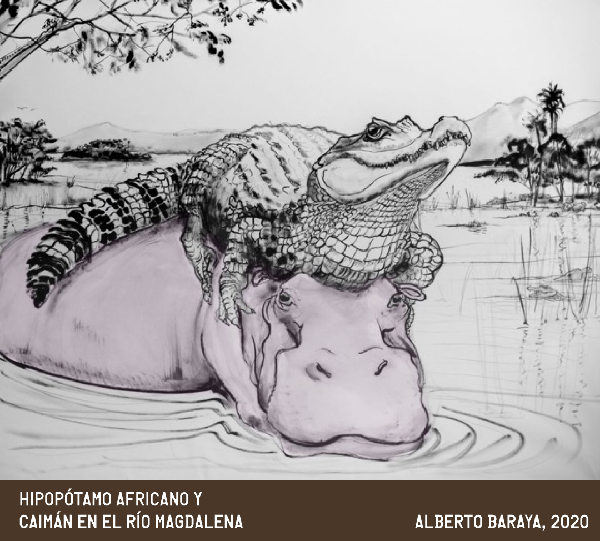 y reproduciéndose. Cuarenta años después se calcula que hay una población de entre
ciento veinte y ciento cuarenta, que su crecimiento es alarmante y se teme por un eventual desequilibrio ecológico, constituyendo una amenaza para otras especies locales como el chigüiro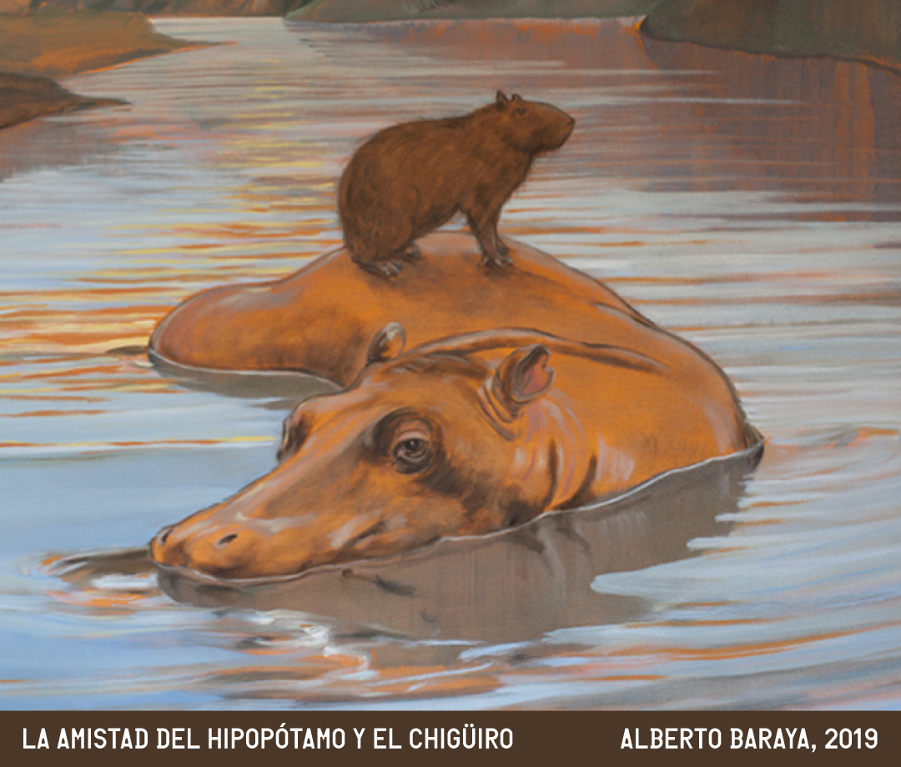 y el manatí. Algunos expertos proponen con urgencia la caza biológica de control, o su exterminio, otros
proponen su esterilización, sea química o quirúrgica, otros proponen su confinamiento, otros proponen su repatriación al África. Los locales (humanos) piden que se respeten sus vidas y su permanencia, por cuanto su presencia ha activado el
turismo en la zona a través de los años, y no se han reportado muchos daños. Se reportan, sí, casos de comercio con las crías, mientras que otras personas, obvio, han pensado en la ganadería y el comercio de su carne. Recientemente fueron
declarados especie invasora, un estatus necesario para cualquier acción que se pretenda emprender (como si no fuera invasora la especie que los declara como tal).
El arte observa y representa, reflexiona, ironiza, conceptualiza, alegoriza, idealiza, critica, expresa, comunica, entretiene, inventa, cuestiona, manipula emocionalmente… Pero es difícil en este caso que proporcione argumentos en una u otra
dirección. Está más en su naturaleza suscitar preguntas que resolver problemas. Es posible que incida y cambie ciertas maneras de pensar a corto o largo plazo, pero se mueve de maneras misteriosas. CIENCIA y ARTE comparten ciertos rasgos
generales: son formas simbólicas interpretativas del mundo que nos rodea, son creativas, son evolutivas y comparten un
aspecto estético, exhibitivo en la medida en que son demostrativas… Pero sus métodos, sus objetivos y sus productos son muy distintos, y generalmente esperamos respuestas de parte de la ciencia, no del
arte. Y esperamos que sea ella la que solucione nuestros problemas.
La ciencia es importante en el debate público, porque, por supuesto, no es una, ni única, y también genera hipótesis y teorías a partir de experiencias previas. Hipótesis, teorías y prácticas que pueden perfectamente resultar fallidas.
En la poesía, ¿cuál será el papel del hipopótamo? El tigre es la simetría, la belleza, el cuervo es la noche y la muerte, la pantera prisionera, el perro la miseria, …, pero el hipopótamo ¿un divertimento del Creador, un exabrupto de la
naturaleza acaso? ¿Un memento gordi? ¿O existe tal vez para inspirar juguetes y muñecos para los niños? Pero si es para los niños, por qué resulta después tan agresivo…
Además, nada rima con “hipopótamo”, solo cosas como “hipotálamo”, o “plátano”, cosas chistosas. O de pronto “tuétanos”... o “esperpento”… o… “esperanto”… o “rimbombante”… mmm…
Es sabido que Mario Vargas Llosa, el famoso político de derechas y premio Nobel de literatura, tiene debilidad por esta especie y posee una colección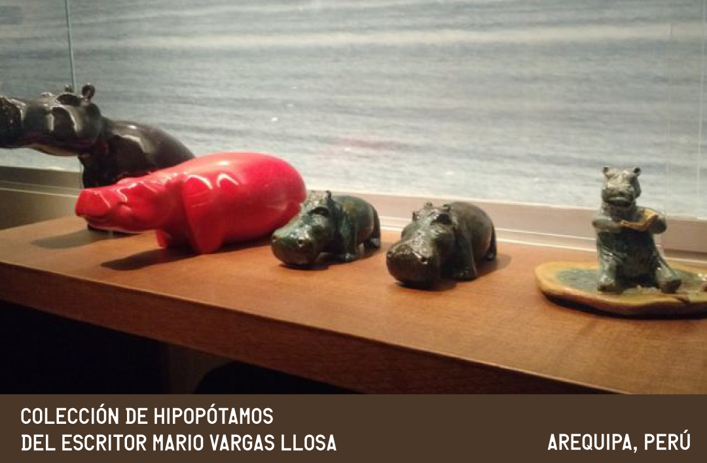 de hipopotamitos de diferentes tamaños, colores y materiales en su Casa Museo en Arequipa, su ciudad natal, y muy seguramente también en su residencia
actual en Madrid. Ha dicho de ellos: “Es un animal lindo, delicado, y un ejemplo para el ser humano. No hace daño a nadie. Tiene una piel suave, una garganta chiquita y solo ingiere libélulas y pequeños insectos (…) Su pasión es revolcarse
en el barro, estar en las charcas y hacer todo el tiempo el amor con la hipopótama. ¿No es de admirar? Los adoro…”
Al parecer, su admiración por la especie es porque le parecen modelos insuperables de desempeño sexual. En el segundo acto de su obra de teatro Kathie y el hipopótamo, de 1983, lo describe así en voz de Santiago, un profesor
universitario contratado por una mujer de clase alta para que la ayude a escribir un libro sobre sus viajes a Asia y África:
Esta primitiva estructura rugosas que usted ve, Frau Katharina, el hipopótamo, tiene una garganta tan delicada que sólo puede tragar a los pajaritos, moscas, mariposas y abejorros que, confundiéndolo con un tronco, se posan en él. Pero es una fiera de una voracidad sexual inacabable, una bestia libidinosa de potencia cataclísmica. No es extraño que, a la primera experiencia, las hipopótamas queden disgustadas para siempre del cucú, como Adèle Foucher, ya que el más inapetente de los hipopótamos supera con facilidad el récord establecido para la especie humana por las nueve performances de Victor Hugo en su noche de bodas... (Retomando su voz natural, sigue dictando.) Lo que decía el zoólogo prusiano era verdad: todo el resto de la noche oímos al ungulado vencedor y a la complaciente hipopótama copulando con un estruendo que empobrecía el de las cataratas...
Hipopótamos famosos: William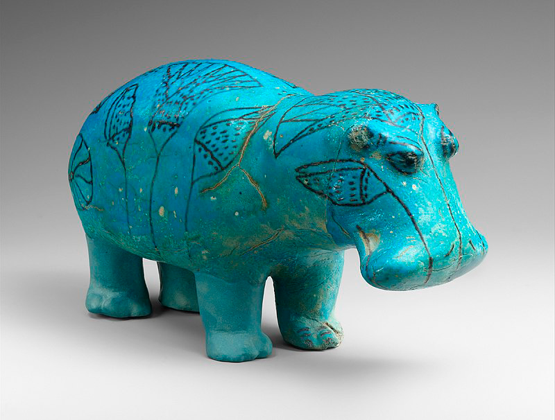, hipopótamo
egipcio azul de fayenza reproducido ampliamente como suvenir y apodado de esta forma en 1931 por el personal del Museo Metropolitano de Nueva York, donde se aloja; Obaysch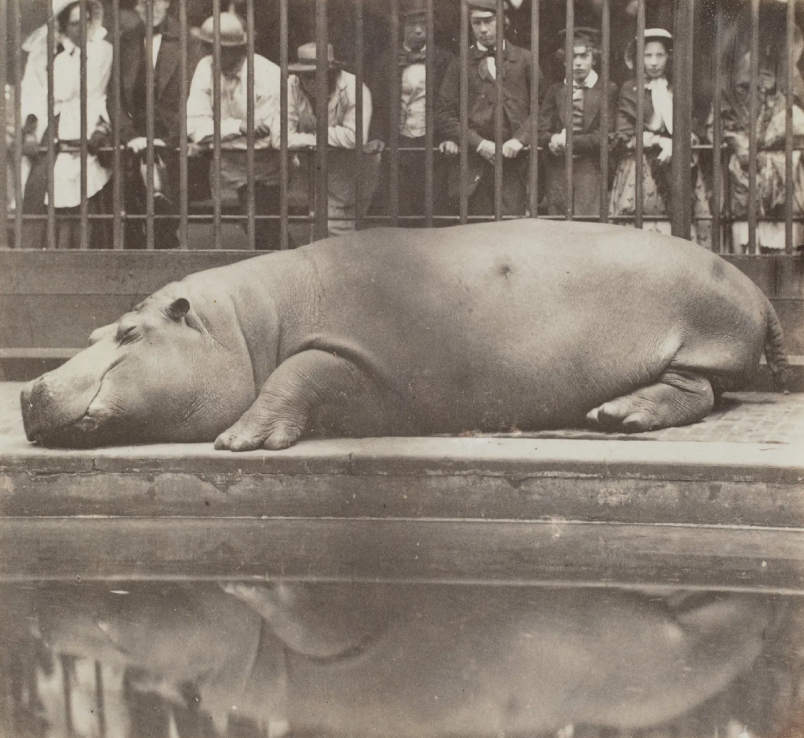, que vivía en el zoológico de Londres en el siglo XIX, favorito de la Reina Victoria y al que le hicieron una canción, la Polka del Hipopótamo; la
bailarina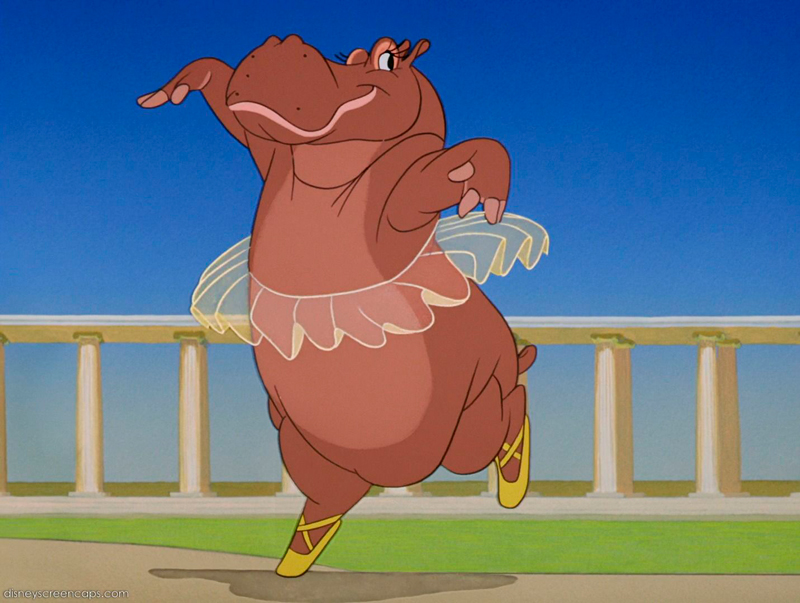 de ballet de Fantasía, la película de Disney de 1940; Pepe Pótamo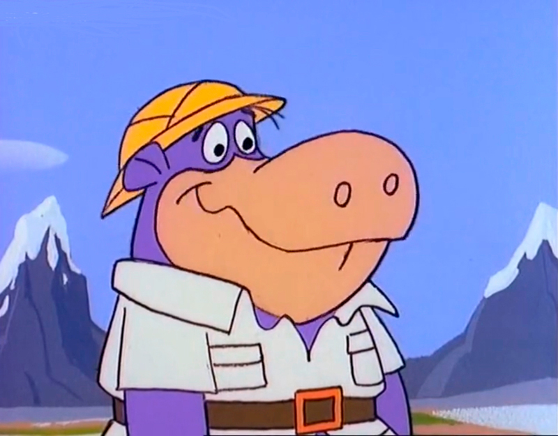, de los estudios Hannah Barbera; Flavio y Marita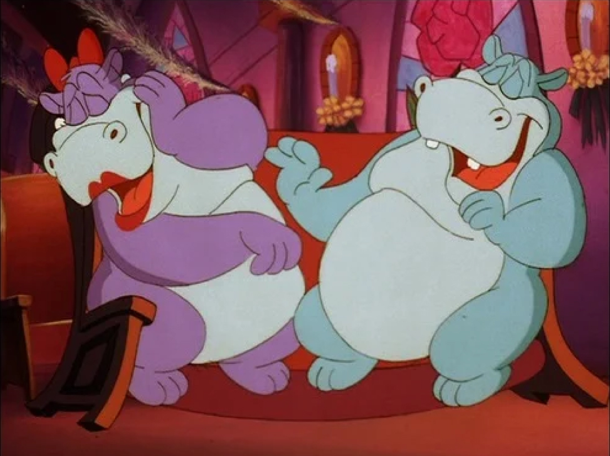 de Animaniacs; el hipopótamo de Kathie y el hipopótamo (1983), obra de teatro de Mario Vargas Llosa y toda su colección de
hipopotamitos; Hip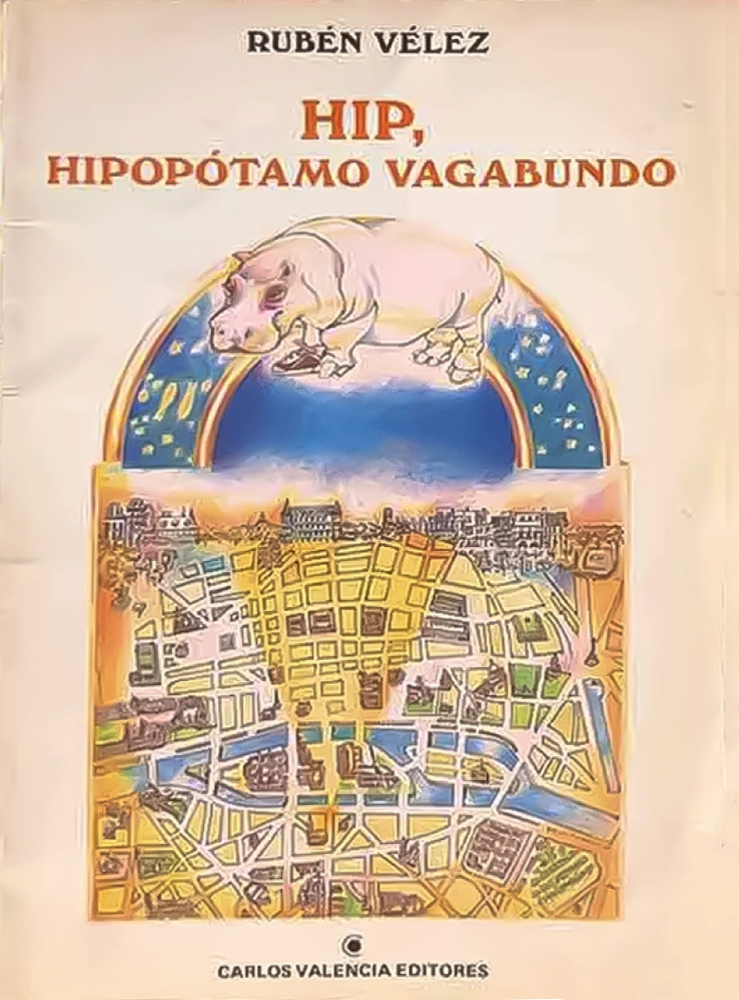, hipopótamo vagabundo (1981), de Rubén Vélez, clásico de la
literatura infantil colombiana; el juego del Tragabolas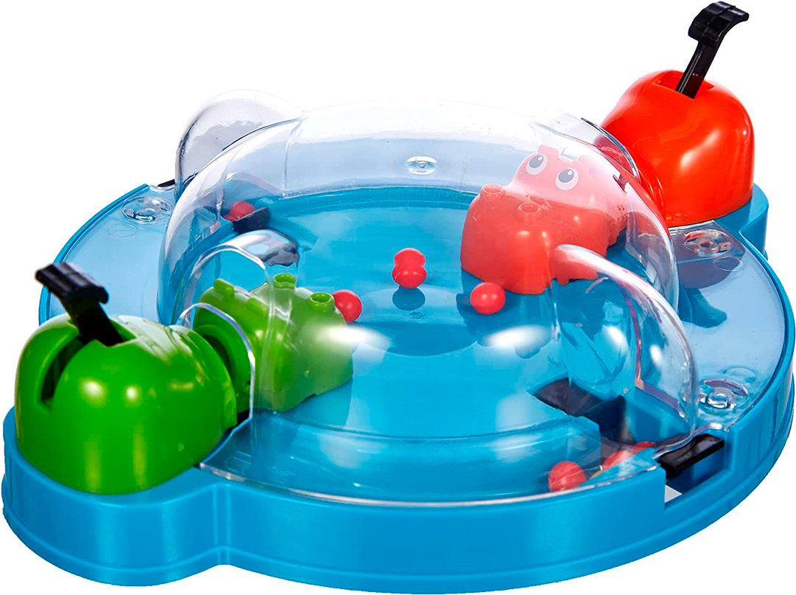; Owen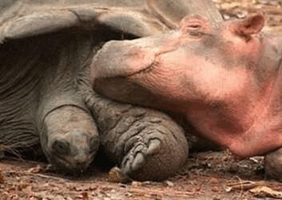, un individuo que tiene una mejor amiga tortuga, Mzee, en un zoológico de Kenia;
Pat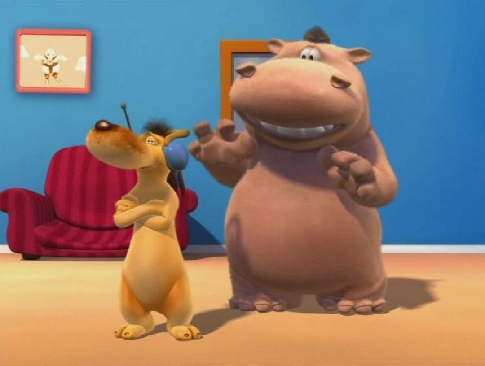, de Pat & Stanley, el hipopótamo rosado francés amigo del perro
amarillo; Tasha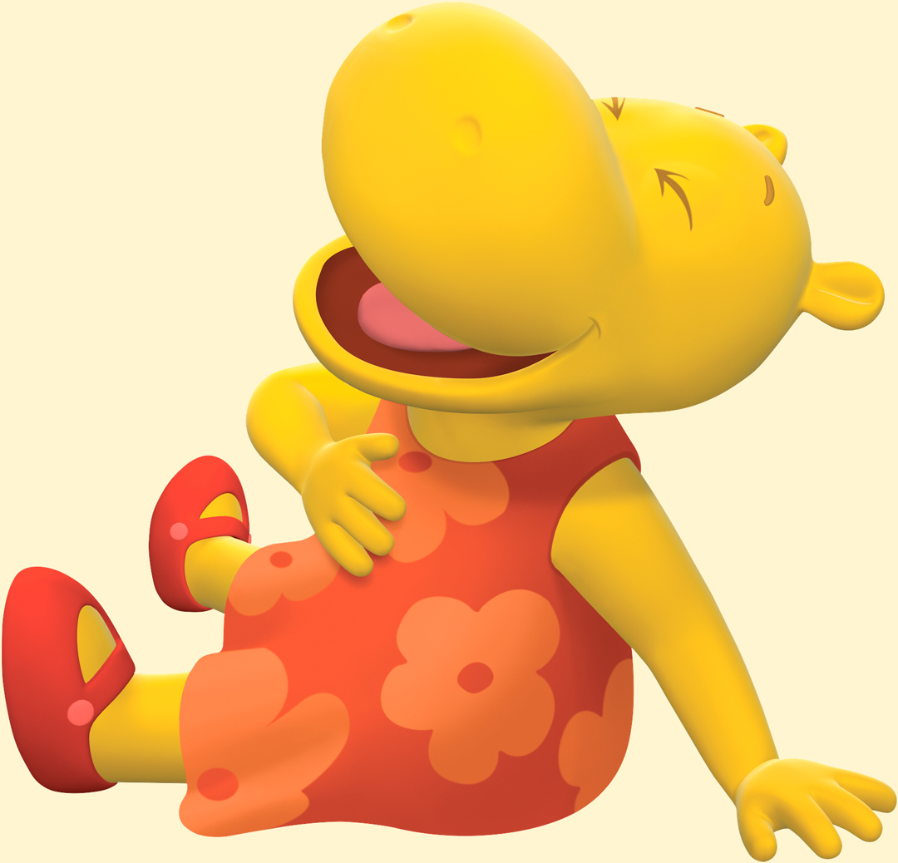 de los Backyardigans; Gloria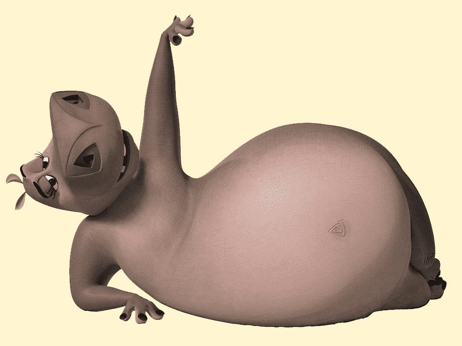 y Moto-Moto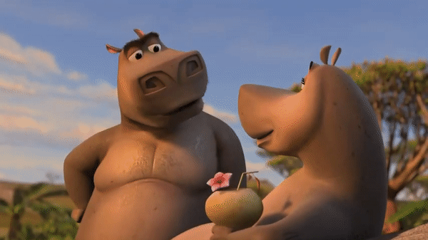, la pareja de Madagascar…
El hipopótamo es pintura y escultura: En 1515 al rey Manuel I de Portugal, “El Afortunado”, le regalaron un rinoceronte indio traído desde Goa hasta Lisboa, que él mismo decidió casi inmediatamente
obsequiarle al papa. La nave naufragó y el regalo no llegó al Vaticano, pero fue inmortalizado por Durero en un grabado que fue reproducido innumerables veces en obras artísticas y científicas a través de los siglos europeos. La
representación de nuestro paquidermo, en cambio, escasea en los mismos tiempos, por lo menos hasta el siglo XIX. En 1617, sin embargo, Rubens pintó La cacería del Hipopótamo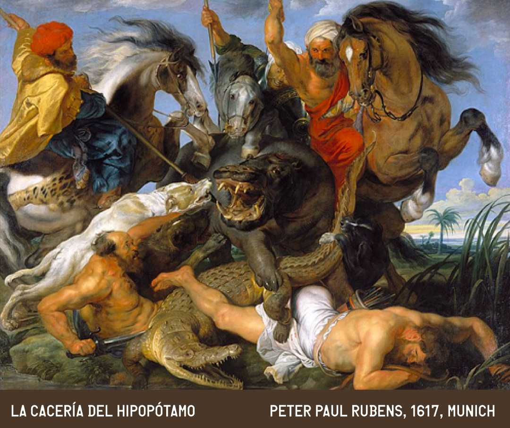 para Maximiliano I de Baviera, una obra absolutamente barroca en su
volumetría, su teatralidad, su gestualidad pictórica, su rimbombancia y su composición espiralada, donde se enredan jinetes orientales, caballos, esclavos y cocodrilos en torno a su presa. Todas las lanzas y miradas están dirigidas hacia la
cabeza del animal, el centro geométrico y visual, que parece emerger del cuadro hacia nosotros. Espléndido.
Paquidermo quiere decir de piel gruesa, pero la epidermis del hipopótamo es delgada. Su piel es lisa, casi sin pelo y no suda, como los cerdos. Secreta, sí, una sustancia que además de humectar su piel, prevenir infecciones bacterianas
y protegerlo del sol, lo colorea con los pigmentos rojizos y naranjas que contiene. Los hipopótamos son paisaje, son pintura de género. Pero los hipopótamos son también tridimensionales. Son de hueso, de carne, de barro y de cerámica. Y de
mucha grasa, que es volumen, es escultura. Es transformación térmica y matérica, como decía Joseph Beuys. Es energía potencial, y eventualmente escultura social. Los hipopótamos son escultura pública y land art, agentes de cambio.
En 2009 una comisión de cazadores custodiada por el Ejército Nacional dio muerte a Pepe, el hipopótamo macho papá de toda su descendencia colombiana, con gran resonancia en los medios mundiales y protesta animalista. El relato aparece al
comienzo de la célebre novela El ruido de las cosas al caer, de Juan Gabriel Vásquez, publicada dos años después. Dieciséis años antes, en 1993, se le dio muerte a Pablo Escobar, después de una larga búsqueda. La artista bogotana Ana
María Villate fue posiblemente la primera en hacer la asociación visual de las dos fotos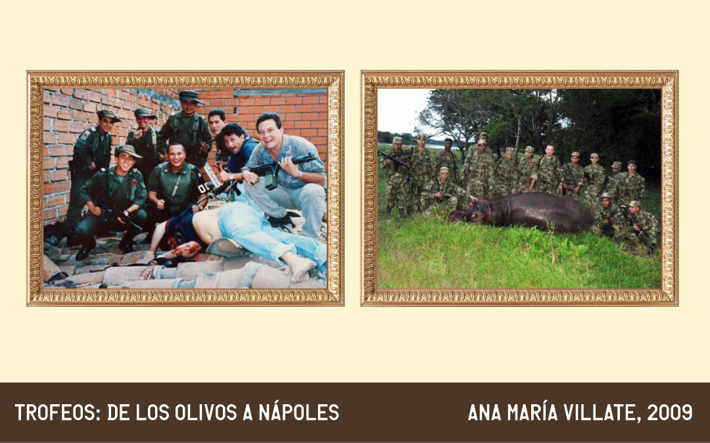, muy parecidas por cierto.
Cuando el artista Nadín Ospina (Bogotá, 1960) hizo sus primeros Bizarros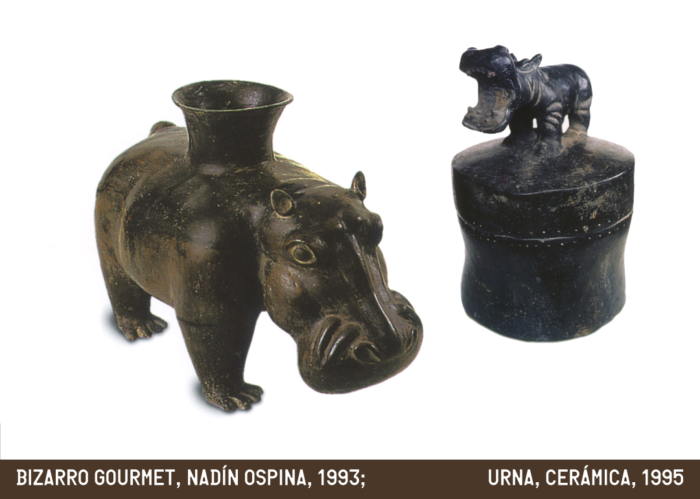 de motivo
hipopotamil en 1993 (el mismo año de la muerte de Escobar), y sus Urnas en 1995, trabajaba con ceramistas falsificadores de guacas y estaba pensando en la apropiación y el simulacro de los medios y las apariencias, fabricando
precolombinos posmodernos, acogiendo la artificialidad y comentando con humor sobre nuestra cultura mestiza e identidad híbrida. “De factura impecable y fuerte presencia”, escribía el historiador y crítico Álvaro Medina, “el hipopótamo
ospiniano podría confundirse con una cerámica Tairona original si se tiene en cuenta el color negro, la superficie lisa, el acabado semibrillante y la ancha vertedera de cada pieza. Podría pasar por Tairona si no mediara el hecho de que el
hipopótamo no es un animal americano” (Medina, Álvaro, NADÍN OSPINA: Refiguraciones, MAMBO, 2000). Nadín podría haber estado enterado en su momento de la presencia de hipopótamos en la Hacienda Nápoles, pero no podría haberse imaginado
que tres décadas después serían una especie “naturalizada”, libre y próspera que se apropió de las riberas del Río Magdalena en el departamento de Antioquia y más allá. Poder de invocación de las imágenes, función propiciatoria del arte,
verdadera Magia (bien) simpática, si lo miramos retrospectivamente.
Al conjunto de artesanías, memorabilia y monumentos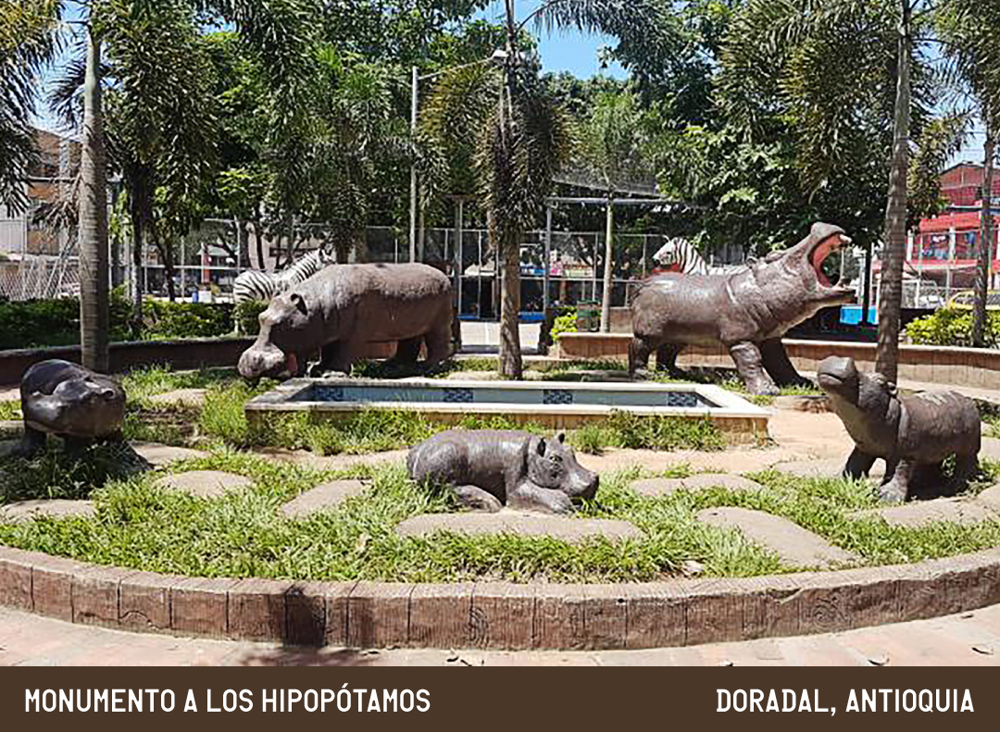 locales en Puerto Triunfo y
Doradal, que celebran la presencia de los artiodáctilos y que atraen a los turistas, se suman las representaciones de varios artistas contemporáneos que han realizado expediciones a la zona y han producido reflexiones y comentarios artísticos
sobre el fenómeno. Alberto Baraya (Bogotá, 1968), quien sería algo así como nuestro “naturalista artificial” decimonónico en pleno siglo XXI, famoso por su gran Herbario de plantas artificiales, pinta paisajes en plein air en la
zona y propone recombinaciones irónicas de granjas y fauna local, y de los emblemas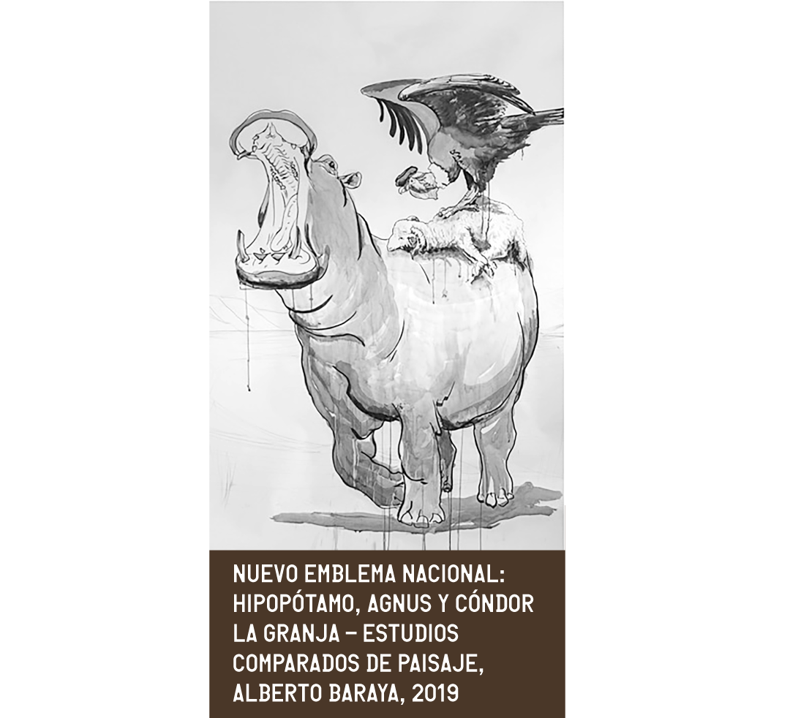.
Sebastián Múnera (Bogotá, 1989), también reconocido “animalero” del arte, ha visitado y filmado la Hacienda Nápoles y sus alrededores y ha realizado más de una película sobre el tema.
www.youtube.com/el-origen-de-las-especies
Y más recientemente, el colectivo La Decanatura (Elkin Calderón & Diego Piñeros) puso a volar hipopótamos inflables e iluminados sobre el río de día y de noche. En una completa subversión de su peso y su materialidad, los animales
cobran aquí una levedad inusual convirtiéndose en fantasmas. ¿Serán los espíritus anticipados de una masacre anunciada, que flotarán durante siglos por venir?
La noción de “sacrificio animal” es una herencia ancestral de rituales en los que se ofrecía la muerte del animal a los dioses. Hoy se le sigue llamando “sacrificio” a la matanza animal, a lo que otros incluso llamarían asesinato, en virtud
de una causa mayor. En este caso, la causa mayor sería el cuidado del ecosistema. Alertan sobre el desplazamiento y desaparición de otras especies y del impacto social sobre los habitantes humanos de la zona. La razón, la lógica, la ciencia
indican que es una resolución perentoria… pero es algo que desde el arte no podríamos promover. El arte es sobre la existencia, la sobrevivencia, la resistencia. Será simbólico, pero no es menos real.
¡Hipopótamos de todos los países, uníos!
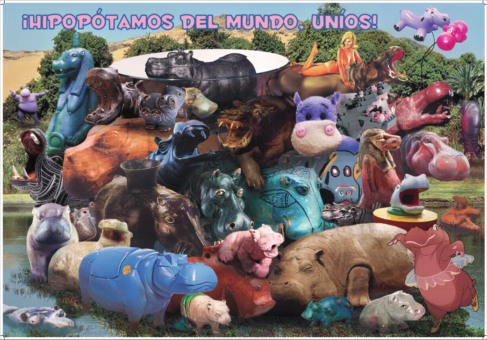.
Bogotá, 2022